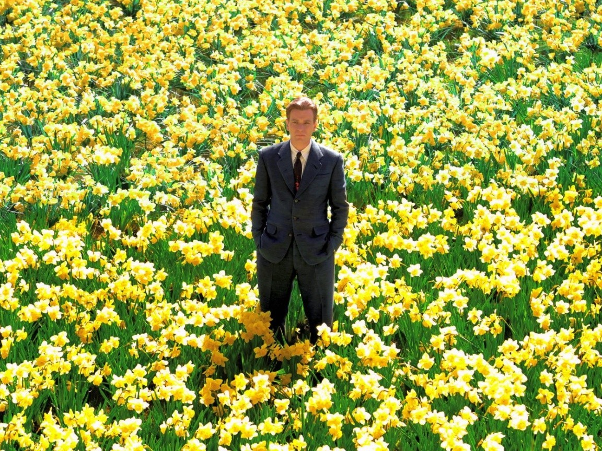
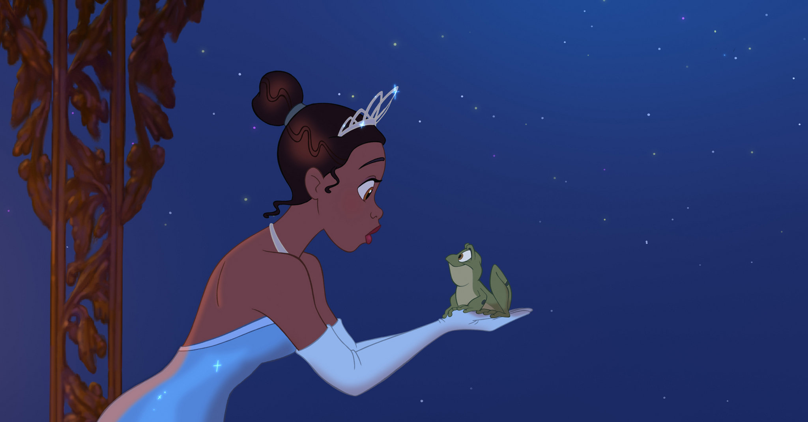
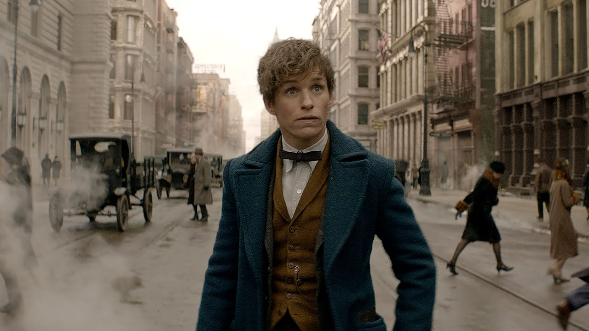

1
Moonrise Kingdom
2012 - Wes Anderson

In 1965 lopen twee verliefde tieners (Kara Hayward, Jared Gilman) weg, waarna de sheriff (Bruce Willis) en de ouders van het meisje (Bill Murray, Frances McDormand) naar hen op zoek gaan. Het anders zo rustige eiland aan de Amerikaanse oostkust is dan in rep en roer. Ook een dreigende storm zet de gebeurtenissen op scherp.
Jared Gilman, Kara Hayward, Bruce Willis2
Big Fish 2003 - Tim Burton

Big Fish gaat over Will Bloom (Billy Crudup) die zijn vader Ed pas op zijn sterfbed echt leert kennen.
Ewan McGregor, Helena Bonham Carter, Billy Crudup3
Princess and the frog2009 - Ron Clement

Een animatiefilm van Walt Disney Pictures, losjes gebaseerd op het sprookje ‘De Kikkerkoning’
Anika Noni Rose, Keith David, Jenifer Lewis4
Charlie and the Chocolate factory 2005 - Tim Burton

Een jongen wint een tour door een wonderlijke chocoladefabriek, geleid door de meest speciale snoepmaker.
Johnny Depp, Freddie Highmore, David Kelly5
Fantastic Beasts and Where To Find Them 2016 - David Yates

De avonturen van schrijver Newt Scamander en mythische wezens, zeventig jaren voor Harry Potter.
Eddie Redmayne, Katherine Waterston, Alison Sudol